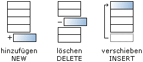

Hilfe
Insert


Aufruf
Parameter
Rückgabewert
Beschreibung
Ein Type Feld ist ein dynamisches Feld, welches die Einträge automatisch verwaltet. Die Einträge in Type Feldern kann man nicht sofort ansprechen. Man muss zuerst zum richtigen Eintrag wechseln, und erst dann auslesen oder speichern.
Feld ist ein dynamisches Feld, welches die Einträge automatisch verwaltet. Die Einträge in Type Feldern kann man nicht sofort ansprechen. Man muss zuerst zum richtigen Eintrag wechseln, und erst dann auslesen oder speichern.
Zusatzinformation
Beispiel
Siehe auch
Insert variable position typename
Parameter
| variable | Container-Variable der Type Kollektion |
| position |
Logische Position bestehend aus After, Before, First und Last
|
| typename | Name der Type Kollektion |
Rückgabewert
-
Beschreibung
Dieser Befehl verschiebt einen bereits existierenden Type Eintrag an eine andere Stelle im Type Feld. Wird z.B. ein neuer Eintrag mit New erstellt, so wandert dieser Eintrag zum Ende des Type Feldes. Insert kann nur zusammen mit After, Before, First und Last verwendet werden.

Ein Type
Feld ist ein dynamisches Feld, welches die Einträge automatisch verwaltet. Die Einträge in Type Feldern kann man nicht sofort ansprechen. Man muss zuerst zum richtigen Eintrag wechseln, und erst dann auslesen oder speichern.
Zusatzinformation
Dim Felder sind einfacher zu benutzen und sollen bevorzugt angewendet werden.
Felder sind einfacher zu benutzen und sollen bevorzugt angewendet werden.Beispiel
Dieses Programm demonstriert die Verschiebung:
Type Chair
Field created
End Type
For t = 1 To 10
room.chair = New Chair
room\created = t
Next
room.chair = New Chair
room\created = 11
Insert room Before First Chair
For room.chair = Each chair
Print room\created
Next
WaitKey
Field created
End Type
For t = 1 To 10
room.chair = New Chair
room\created = t
Next
room.chair = New Chair
room\created = 11
Insert room Before First Chair
For room.chair = Each chair
Print room\created
Next
WaitKey
Siehe auch
First, Field, Type, Each, Last, Dim, Delete, Before, After, New